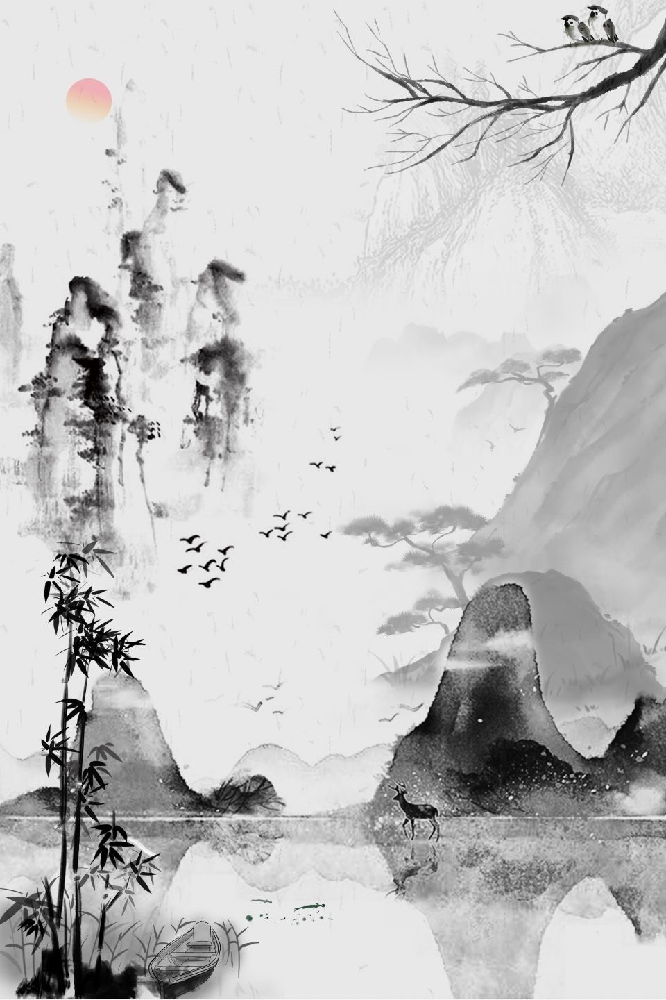

Vẻ Đẹp Bạch Ngọc
Giữa Làn Nước Tĩnh
Vạn Tượng
Trong Lời
Lấy cảm hứng từ những đóa sen trắng tinh khôi mang sắc ngọc bích dịu dàng, lưu giữ trọn vẹn sự thanh tịnh và nét sang trọng vượt thời gian. Không gian khám phá văn học, thi pháp và tinh hoa tri thức nhân loại. Nơi ngôn từ được phân tách, và vẻ đẹp được tôn vinh.


Văn Hiến
Di sản văn học nước nhà & Thế giới
Đại Bách Khoa
Cẩm nang học thuật văn chương
Thi Pháp Học
Phân tích thơ theo 4 tầng (Dữ kiện → Đối chiếu → Chiếu rọi → Mở ngỏ)